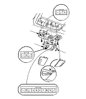
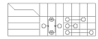

Sunroof Switch Test
Carefully push out the sunroof switch (A) from roof console (B), then disconnect the 10P connector from the switch.

Check for continuity between the terminals in each switch position according to the table.
If the continuity is not as specified, replace the bulb (C) or the switch.
